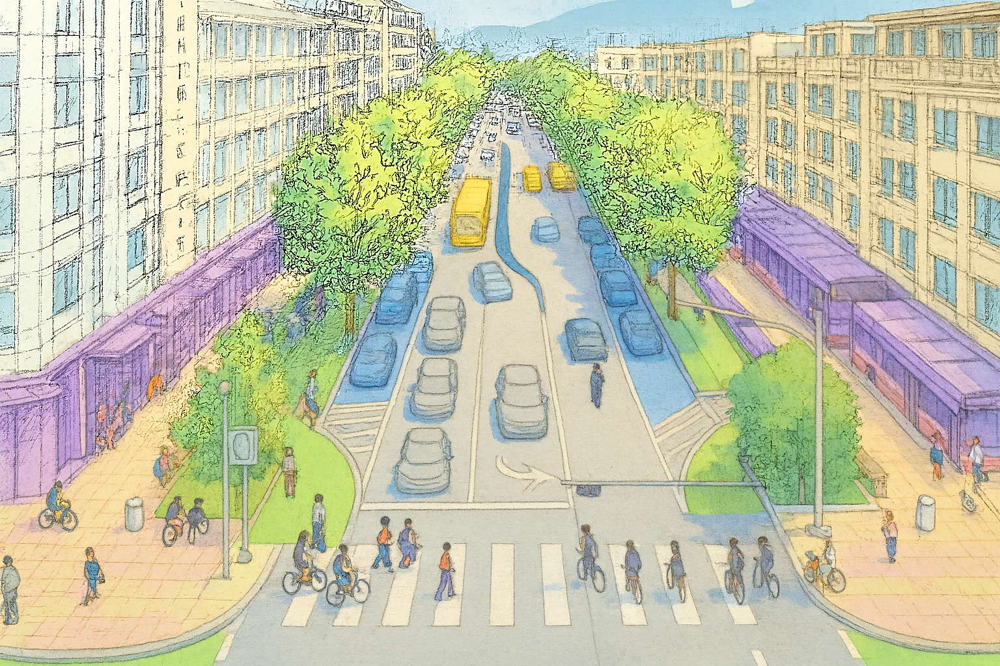

scroll down or press ↓ to continue
Research Objective
Complete streets is a transportation policy that creates safe, accessible streets for all users—whether they walk, bike, drive, or use public transit. While this approach has gained widespread support from researchers and city planners, a critical challenge remains: how to efficiently collect data and measure street performance at scale.
This project addresses these challenges through two main objectives: (1) developing and implementing an automated method for collecting data on eight key complete streets elements, and (2) creating a numeric rating index that evaluates how complete a street is based on the collected data.
Sidewalk
Bike lane
Amenities
Transit stop
Median
Vehicular road
Street buffer
Street parking
Completeness score
Map of Completeness Score in Atlanta
Data collection
Our approach aggregates eight Complete Street elements from street view imagery and open data sources. Median, vehicular road, and amenities data are derived from open data, while the remaining elements utilize Google Street View imagery processed through computer vision algorithms.


Weight Assignment
To compute the Composite Completeness Score (out of 100), each street element is assigned a weight—its full marks—based on how much it contributes to five key Complete Streets benefits: safety, community, health, environment, and economy. The workflow below shows how we translate design manuals into contribution scores and, finally, the full marks for each element.
Score Conversion Criteria
About
Description
Complete Streets aim to make travel safer and more accessible for everyone, regardless of abilities and travel modes. However, many cities still lack the data needed to understand how well their streets serve all users. This project uses publicly available imagery and AI to automatically identify key street features such as sidewalks, bike lanes, and street parking. These features are translated into a compsite completeness score by assigning weights to each element. The results help planners evaluate current conditions, prioritize improvements, and design streets that support safer and more active communities.
Team